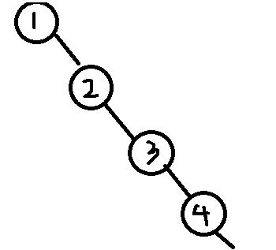
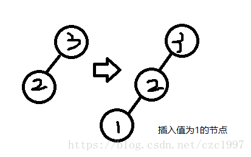
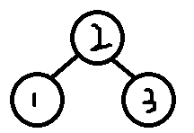
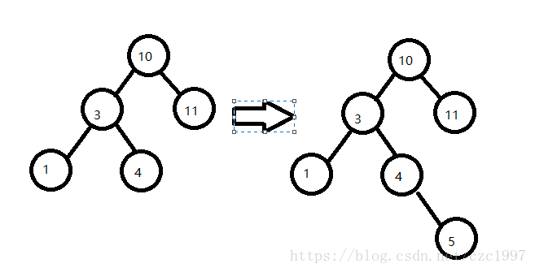

AVL树的全称是平衡搜索二叉树，本质上也是一个二叉搜索树（BST），满足BST树的所有性质。
AVL简介
在BST中搜索一个结点的平均时间复杂度是O(lgn)，最坏情况会出现O(n)，即出现连续的左/右子树：

这种情况其实就已经是链式存储，无法将树的优势体现出来。为了避免这种情况，我们就要保证这个树随时都是平衡的。当然要求不能那么严格，不需要保证它完全平衡（每个节点的左右子树高度差的绝对值都为0），AVL树就要求的是只要每个节点的左右子树高度差的绝对值不超过1，就可以称作平衡。
AVL自旋
**平衡因子(BF)**：每个节点的左右子树的高度差的绝对值
在AVL树中，插入一个节点之后都会判断是否打破了这个平衡。如果打破了，就需要对树进行调整，让它仍然满足平衡的定义，并且不改变中序遍历的正确性。这步操作就叫做旋转。即，是否需要旋转以及具体的旋转实现都要包含在插入函数里。
根据插入的位置不同，旋转的类型也分为4种：LL，LR，RL，RR：
- 左左LL：插入点位于x的左孩子的左子树中，右旋。
- 左右LR：插入点位于x的左孩子的右子树中，较低的先左旋，转换为LL问题，再右旋。
- 右左RL：插入点位于x的右孩子的左子树中，较低的先右旋，转化为RR问题。再左旋。
- 右右RR：插入点威武x的右孩子的右子树中，左旋。
自旋详解
AVL树定义以及前置函数定义：
typedef struct AVLTree
{
int height;
int data;
struct AVLTree* lchild;
struct AVLTree* rchild;
}Tree,*pTree;
int GetHeight(pTree tree)
{
if(tree == nullptr) return 0;
return tree->height;
}
bool IsBalanced(pTree tree)
{
int BF = GetHeight(tree->lchild) - GetHeight(tree->rchild);
return abs(BF) < 2;
}
|
左左LL
导致失衡的节点node(1)是节点node(3)的左子树的左孩子，即为LL情况。

算法步骤：
- 对于节点node(3)，先取它的左孩子node(2)作为临时节点temp；
- 将temp的右孩子作为node的左孩子；
- 再将node作为temp的右孩子；
- 更新height
- node = temp。此时，temp就成为了原来node一样的存在。
pTree Rotate_LL(pTree tree)
{
pTree temp = tree->lchild;
tree->lchild = temp->rchild;
temp->rchild = tree;
tree->height = max(GetHeight(tree->lchild),GetHeight(tree->rchild))+1;
temp->height = max(GetHeight(temp->lchild),GetHeight(temp->rchild))+1;
return temp;
}
|
调整结果：

右右RR
RR型由于和LL型是对称的，所以只需要将LL中的所有左右互换就可以了。
pTree Rotate_RR(pTree tree)
{
pTree temp = tree->rchild;
tree->rchild = temp->lchild;
temp->lchild = tree;
tree->height = max(GetHeight(tree->lchild),GetHeight(tree->rchild))+1;
temp->height = max(GetHeight(temp->lchild),GetHeight(temp->rchild))+1;
return temp;
}
|
左右LR
引起失衡的是node节点的左子树的右孩子。

在节点值为4的节点插入5，是4的右孩子。此时已经失衡。即为LR问题。
算法步骤：
先获取node（值为10的节点）的左孩子节点，记为temp。
对temp进行RR。
对node进行LL。
pTree Rotate_LR(pTree tree)
{
pTree temp = tree->lchild;
tree->lchild = Rotate_RR(temp);
return Rotate_LL(tree);
}
|
右左RL
RL型由于和LR型是对称的，所以只需要将LR中的所有左右互换就可以了。
pTree Rotate_RL(pTree tree)
{
pTree temp = tree->rchild;
tree->rchild = Rotate_LL(temp);
return Rotate_RR(tree);
}
|
总体代码
#include<iostream>
#include<cstdio>
#include<stack>
using namespace std;
typedef struct AVLNode *position;
typedef position AVLTree;
struct AVLNode{
int data;
AVLTree left;
AVLTree right;
int h;
};
int GetHight(AVLTree A){
if(A == NULL) return -1;
return A->h;
}
AVLTree SLR(AVLTree A){
AVLTree B = A->left;
A->left = B->right;
B->right = A;
A->h = max(GetHight(A->left),GetHight(A->right))+1;
B->h = max(GetHight(B->left),GetHight(B->right))+1;
return B;
}
AVLTree SRR(AVLTree A){
AVLTree B = A->right;
A-> right = B->left;
B->left = A;
A->h = max(GetHight(A->left),GetHight(A->right))+1;
B->h = max(GetHight(B->left),GetHight(B->right))+1;
return B;
}
AVLTree DLRR(AVLTree A){
AVLTree B = A->left;
A->left = SRR(B);
return SLR(A);
}
AVLTree DRLR(AVLTree A){
AVLTree B = A->right;
A->right = SLR(B);
return SRR(A);
}
AVLTree Insert(AVLTree T,int x){
if(T == NULL){
T = new AVLNode();
T->data = x;
T->left = NULL;
T->right = NULL;
T->h = 0;
}else if(x < T->data){
T->left = Insert(T->left,x);
if(GetHight(T->left) - GetHight(T->right) == 2)
if(x < T->left->data) T = SLR(T);
else T = DLRR(T);
}else if(x > T->data){
T->right = Insert(T->right,x);
if(GetHight(T->left)-GetHight(T->right) == -2)
if(x > T->right->data) T = SRR(T);
else T = DRLR(T);
}
T->h = max(GetHight(T->left),GetHight(T->right))+1;
return T;
}
|
参考文章
数据结构：AVL树的平衡调整——LL，LR，RL，RR
AVL树的调整（笔记）